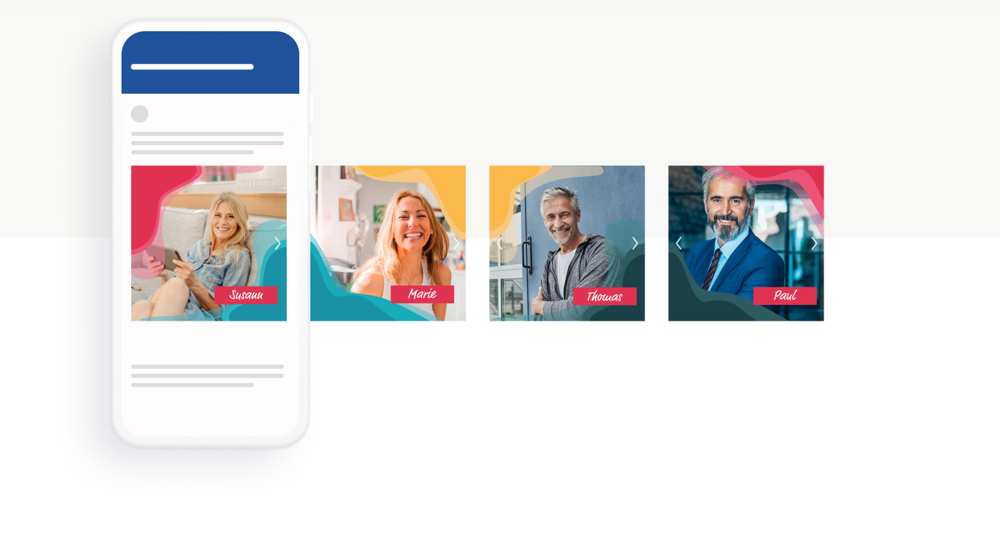
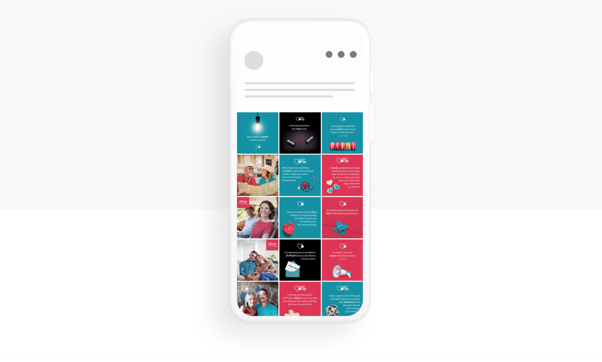
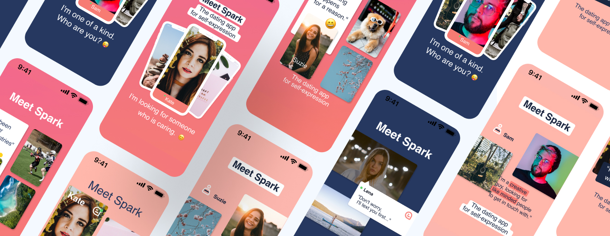

Social Media

Why is a good design concept so important in Social Media?
As we know Social Medias has become one of the most important marketing channels. No matter if organic or paid campaigns, a good design concept is the key to make the brand visible but most importantly: memorable. The amount of visual information we get in our social media channels is huge, in a way that, as a brand, it's not only about being there but also about how you show your brand inbetween all these creatives.

Posts
Carousels
Slideshows
Stories
...

